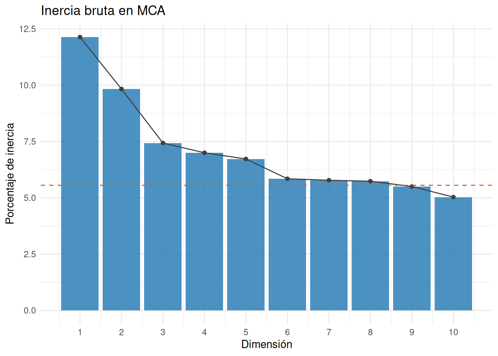
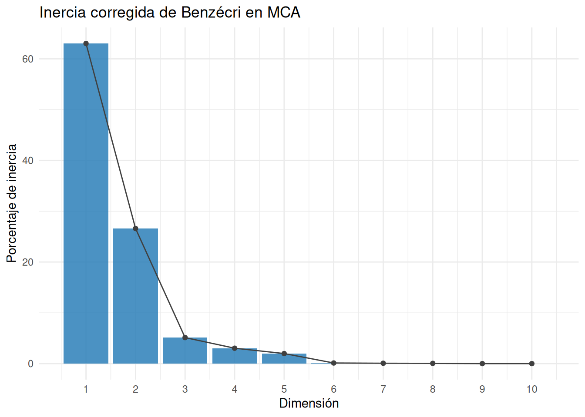
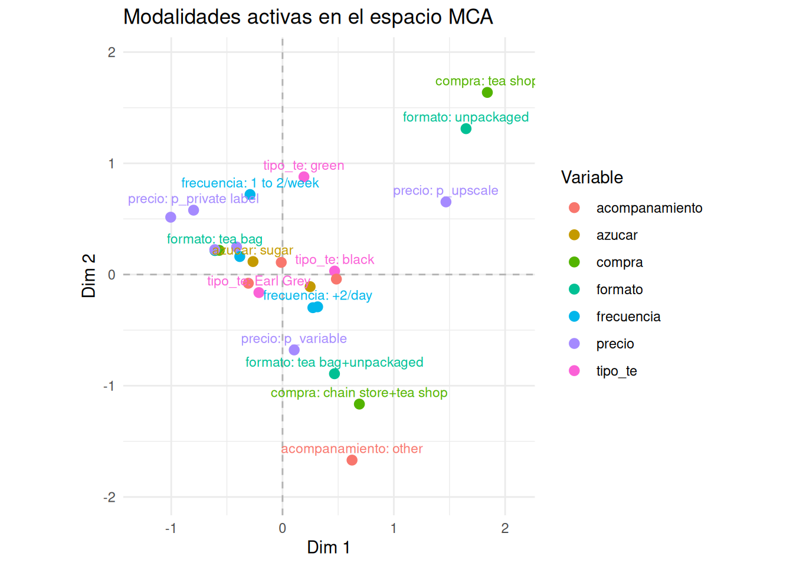
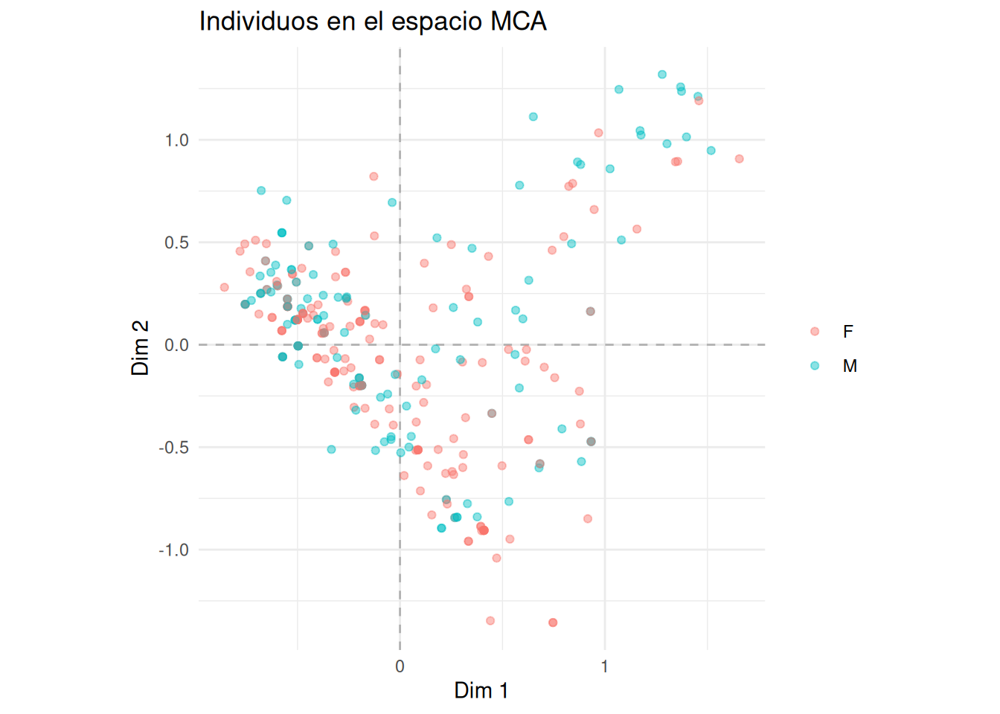
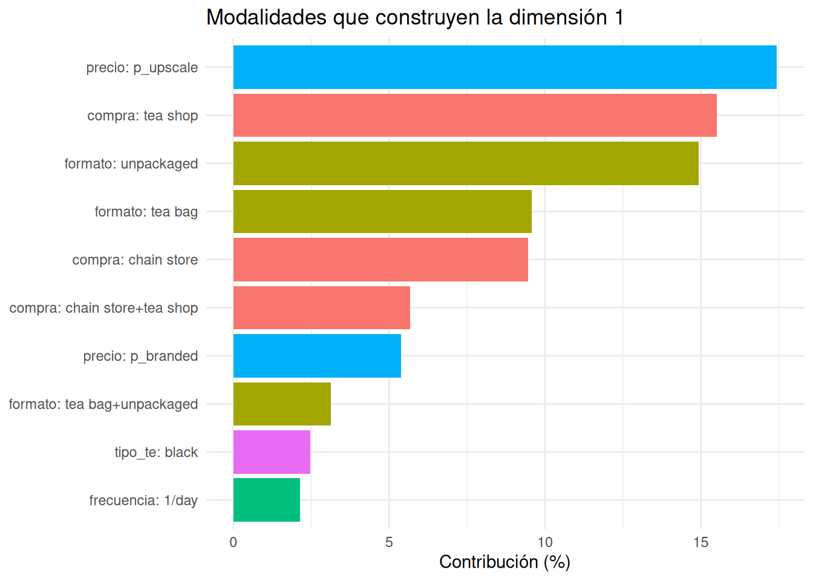
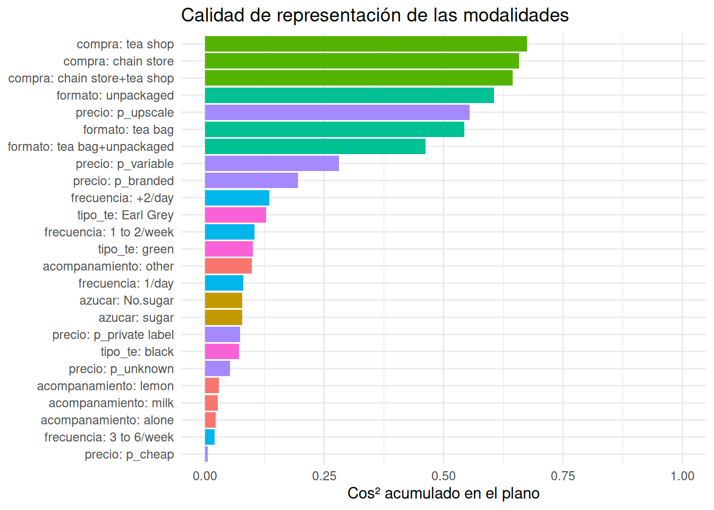
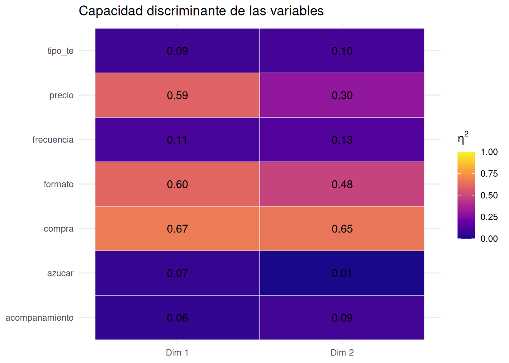
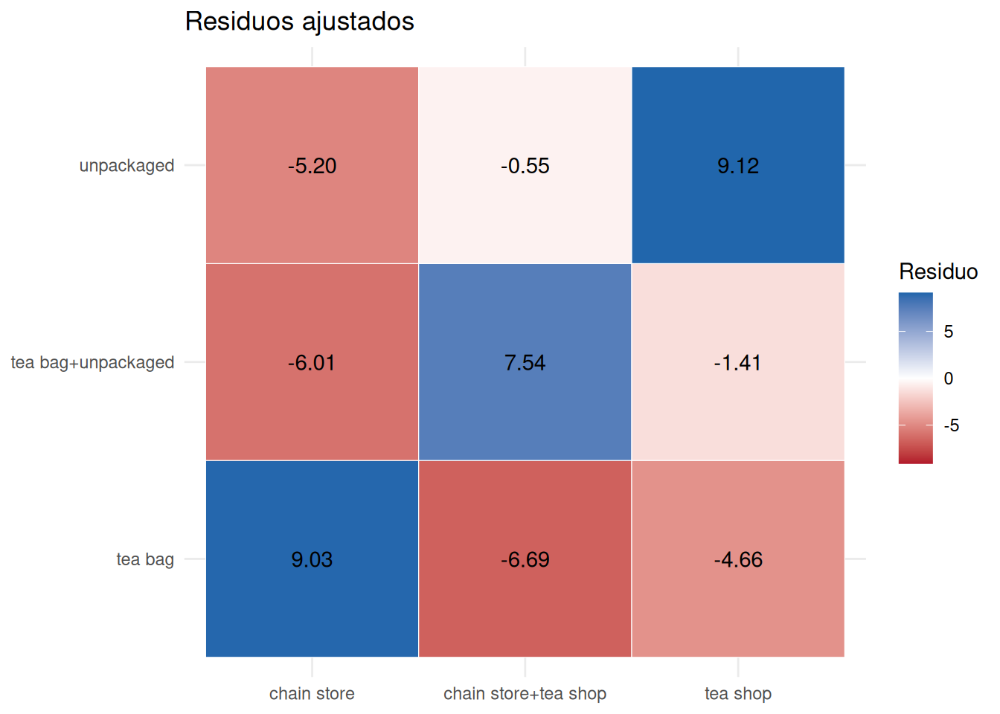

Código
library(tidyverse)
library(knitr)
source("FuncionesCorrespondencias.R")
source("FuncionesMCA.R")library(tidyverse)
library(knitr)
source("FuncionesCorrespondencias.R")
source("FuncionesMCA.R")Los datos deben contener individuos en filas y variables categóricas en columnas. Las variables activas deben ser factores sin niveles vacíos; las variables suplementarias también deben identificarse antes del ajuste. El análisis central se realiza con FactoMineR::MCA(datos, graph = FALSE) y las funciones auxiliares simplifican matrices, resúmenes y gráficos.
El análisis de correspondencias múltiples, MCA, representa individuos descritos por varias variables categóricas. Busca resumir qué modalidades suelen aparecer en perfiles parecidos y qué diferencias separan a los individuos.
Por ejemplo, en una encuesta sobre consumo de té podemos observar simultáneamente el tipo de té, el formato, el lugar de compra, el precio y la frecuencia de consumo. Una colección de tablas cruzadas estudia las variables de dos en dos; MCA construye un espacio común para explorar su estructura conjunta.
| Método | Datos de entrada | Estructura que resume | Elementos representados |
|---|---|---|---|
| PCA | Individuos por variables numéricas | Correlaciones o covarianzas | Individuos y variables |
| CA | Una tabla de contingencia | Desviaciones respecto a la independencia entre dos variables | Categorías fila y columna |
| MCA | Individuos por varias variables categóricas | Asociaciones entre perfiles de modalidades | Individuos, modalidades y variables |
MCA no asigna por sí mismo segmentos ni demuestra relaciones causales. Proporciona dimensiones descriptivas sobre las que podemos interpretar perfiles, proyectar información suplementaria o realizar posteriormente un clustering.
MCA aparece con frecuencia en:
Usaremos los datos tea de FactoMineR, que contienen respuestas individuales sobre hábitos de consumo de té. Seleccionamos siete variables activas y dos suplementarias.
data(tea, package = "FactoMineR")
datos_mca <- tea |>
transmute(
tipo_te = Tea,
acompanamiento = How,
azucar = sugar,
formato = how,
compra = where,
precio = price,
frecuencia = frequency,
sexo = sex,
edad = age_Q
)
head(datos_mca) |>
kable()| tipo_te | acompanamiento | azucar | formato | compra | precio | frecuencia | sexo | edad |
|---|---|---|---|---|---|---|---|---|
| black | alone | sugar | tea bag | chain store | p_unknown | 1/day | M | 35-44 |
| black | milk | No.sugar | tea bag | chain store | p_variable | 1/day | F | 45-59 |
| Earl Grey | alone | No.sugar | tea bag | chain store | p_variable | +2/day | F | 45-59 |
| Earl Grey | alone | sugar | tea bag | chain store | p_variable | 1/day | M | 15-24 |
| Earl Grey | alone | No.sugar | tea bag | chain store | p_variable | +2/day | M | 45-59 |
| Earl Grey | alone | No.sugar | tea bag | chain store | p_private label | 1/day | M | 15-24 |
Las siete primeras variables construirán los ejes. sexo y edad serán suplementarias: podremos relacionarlas con el mapa, pero no modificarán su orientación.
resumen_modalidades <- tibble(
variable = names(datos_mca),
modalidades = vapply(datos_mca, nlevels, integer(1))
)
kable(resumen_modalidades)| variable | modalidades |
|---|---|
| tipo_te | 3 |
| acompanamiento | 4 |
| azucar | 2 |
| formato | 3 |
| compra | 3 |
| precio | 6 |
| frecuencia | 4 |
| sexo | 2 |
| edad | 5 |
Antes de ajustar MCA debemos decidir:
Una categoría rara puede quedar muy lejos del origen porque la distancia \(\chi^2\) le concede mucho peso. No debe reagruparse automáticamente: primero hay que decidir si representa información sustantiva, ruido de muestreo o un problema de codificación.
Supongamos que tenemos \(n\) individuos, \(Q\) variables categóricas y un total de \(K\) modalidades. MCA transforma los datos en la matriz indicadora completa:
\[ Z=(z_{ik})\in\{0,1\}^{n\times K}, \]
donde \(z_{ik}=1\) si el individuo \(i\) presenta la modalidad \(k\) y vale 0 en caso contrario.
datos_activos <- datos_mca[, 1:7]
Z <- crear_indicadora_mca(datos_activos)
kable(Z[1:6, 1:12])| tipo_te: black | tipo_te: Earl Grey | tipo_te: green | acompanamiento: alone | acompanamiento: lemon | acompanamiento: milk | acompanamiento: other | azucar: No.sugar | azucar: sugar | formato: tea bag | formato: tea bag+unpackaged | formato: unpackaged |
|---|---|---|---|---|---|---|---|---|---|---|---|
| 1 | 0 | 0 | 1 | 0 | 0 | 0 | 0 | 1 | 1 | 0 | 0 |
| 1 | 0 | 0 | 0 | 0 | 1 | 0 | 1 | 0 | 1 | 0 | 0 |
| 0 | 1 | 0 | 1 | 0 | 0 | 0 | 1 | 0 | 1 | 0 | 0 |
| 0 | 1 | 0 | 1 | 0 | 0 | 0 | 0 | 1 | 1 | 0 | 0 |
| 0 | 1 | 0 | 1 | 0 | 0 | 0 | 1 | 0 | 1 | 0 | 0 |
| 0 | 1 | 0 | 1 | 0 | 0 | 0 | 1 | 0 | 1 | 0 | 0 |
tibble(
individuos = nrow(Z),
variables_activas = ncol(datos_activos),
modalidades = ncol(Z),
suma_primera_fila = rowSums(Z)[1]
) |>
kable()| individuos | variables_activas | modalidades | suma_primera_fila |
|---|---|---|---|
| 300 | 7 | 25 | 7 |
Cada individuo selecciona exactamente una modalidad de cada variable. Por tanto,
\[ \sum_{k=1}^{K}z_{ik}=Q. \]
Las columnas aparecen organizadas en bloques: un bloque por variable. Dentro de cada bloque solo puede aparecer un 1 por fila.
La tabla de Burt cruza todas las modalidades entre sí:
\[ B=Z^\top Z. \]
B <- crear_burt_mca(datos_activos)
kable(B[1:8, 1:8])| tipo_te: black | tipo_te: Earl Grey | tipo_te: green | acompanamiento: alone | acompanamiento: lemon | acompanamiento: milk | acompanamiento: other | azucar: No.sugar | |
|---|---|---|---|---|---|---|---|---|
| tipo_te: black | 74 | 0 | 0 | 42 | 7 | 19 | 6 | 51 |
| tipo_te: Earl Grey | 0 | 193 | 0 | 128 | 24 | 38 | 3 | 84 |
| tipo_te: green | 0 | 0 | 33 | 25 | 2 | 6 | 0 | 20 |
| acompanamiento: alone | 42 | 128 | 25 | 195 | 0 | 0 | 0 | 109 |
| acompanamiento: lemon | 7 | 24 | 2 | 0 | 33 | 0 | 0 | 12 |
| acompanamiento: milk | 19 | 38 | 6 | 0 | 0 | 63 | 0 | 29 |
| acompanamiento: other | 6 | 3 | 0 | 0 | 0 | 0 | 9 | 5 |
| azucar: No.sugar | 51 | 84 | 20 | 109 | 12 | 29 | 5 | 155 |
Los bloques fuera de la diagonal son tablas de contingencia entre pares de variables. Los bloques diagonales contienen las frecuencias de cada modalidad: dos modalidades distintas de una misma variable nunca pueden aparecer simultáneamente.
La formulación mediante \(Z\) conserva la conexión con los individuos; Burt enfatiza las asociaciones entre modalidades. No son dos análisis independientes, sino dos representaciones relacionadas del mismo problema.
MCA puede entenderse como un CA aplicado a la matriz indicadora \(Z\). Como cada una de las \(n\) filas suma \(Q\), el total es \(nQ\) y la matriz de frecuencias relativas es:
\[ P=\frac{1}{nQ}Z. \]
La masa de cada individuo es la misma:
\[ r_i=\frac{1}{n}. \]
Si la modalidad \(k\) aparece en \(n_k\) individuos, su masa es:
\[ c_k=\frac{n_k}{nQ}. \]
Cada variable activa tiene masa total \(1/Q\), con independencia de su número de modalidades. Sin embargo, una variable con muchas modalidades genera más direcciones posibles y suele aportar más inercia estructural.
El perfil del individuo \(i\) contiene el valor \(z_{ik}/Q\) en cada modalidad. La distancia \(\chi^2\) entre dos individuos es:
\[ d^2(i,i')= \sum_{k=1}^{K}\frac{1}{c_k} \left(\frac{z_{ik}}{Q}-\frac{z_{i'k}}{Q}\right)^2. \]
Si escribimos \(p_k=n_k/n\), obtenemos:
\[ d^2(i,i')= \frac{1}{Q}\sum_{k=1}^{K} \frac{(z_{ik}-z_{i'k})^2}{p_k}. \]
Dos individuos son cercanos cuando comparten modalidades. Una diferencia en una modalidad rara, con \(p_k\) pequeño, pesa más que una diferencia en una modalidad habitual. Esta propiedad puede revelar perfiles distintivos, pero también amplificar categorías inestables.
Como en CA, estandarizamos las desviaciones respecto a la independencia:
\[ S=D_r^{-1/2}(P-rc^\top)D_c^{-1/2}. \]
La descomposición en valores singulares,
\[ S=UDV^\top, \]
produce ejes ortogonales. Los autovalores son:
\[ \lambda_m=d_m^2. \]
Las coordenadas principales de individuos y modalidades son:
\[ F=D_r^{-1/2}UD, \qquad G=D_c^{-1/2}VD. \]
Debido a que las modalidades de cada variable suman 1 para todos los individuos, existen dependencias lineales entre las columnas de \(Z\). El número máximo de dimensiones no triviales es:
\[ \min(n-1,K-Q). \]
Los estudiantes deben ajustar el modelo explícitamente. Las funciones auxiliares se ocupan de organizar e interpretar el resultado.
ajuste_mca <- FactoMineR::MCA(
datos_mca,
quali.sup = 8:9,
ncp = 10,
graph = FALSE
)
resumen_mca <- resumir_mca(ajuste_mca)
kable(head(resumen_mca$autovalores, 8), digits = 3)| dimension | autovalor | porcentaje | acumulado | correccion |
|---|---|---|---|---|
| 1 | 0.312 | 12.133 | 12.133 | bruta |
| 2 | 0.253 | 9.828 | 21.961 | bruta |
| 3 | 0.191 | 7.431 | 29.392 | bruta |
| 4 | 0.180 | 6.998 | 36.390 | bruta |
| 5 | 0.173 | 6.721 | 43.111 | bruta |
| 6 | 0.150 | 5.844 | 48.955 | bruta |
| 7 | 0.149 | 5.778 | 54.733 | bruta |
| 8 | 0.147 | 5.735 | 60.468 | bruta |
ncp indica cuántas dimensiones se guardan en las coordenadas. Conviene conservar más dimensiones que las dos que se mostrarán en el mapa: decidir usando únicamente una figura bidimensional confundiría representación con estructura completa.
En una matriz indicadora completa, la inercia total tiene una forma especialmente sencilla:
\[ I_{total}=\frac{K}{Q}-1=\frac{K-Q}{Q}. \]
n <- nrow(Z)
Q <- ncol(datos_activos)
K <- ncol(Z)
tibble(
n = n,
Q = Q,
K = K,
dimensiones_maximas = min(n - 1, K - Q),
inercia_total = K / Q - 1
) |>
kable(digits = 3)| n | Q | K | dimensiones_maximas | inercia_total |
|---|---|---|---|---|
| 300 | 7 | 25 | 18 | 2.571 |
Este resultado explica una diferencia importante con PCA. En MCA, parte de la inercia se debe inevitablemente a codificar cada variable mediante varias columnas mutuamente excluyentes. Por eso la inercia suele repartirse entre muchas dimensiones y los porcentajes brutos de los primeros ejes parecen bajos.

La línea discontinua corresponde al autovalor medio estructural \(1/Q\), expresado como porcentaje de la inercia total. No es una regla automática para elegir dimensiones, pero ayuda a identificar ejes que sobresalen de la codificación disyuntiva básica.
La corrección de Benzécri conserva únicamente autovalores superiores a \(1/Q\) y los transforma mediante:
\[ \lambda_m^*= \left(\frac{Q}{Q-1}\right)^2 \left(\lambda_m-\frac{1}{Q}\right)^2, \qquad \lambda_m>\frac{1}{Q}. \]
kable(
head(resumir_inercia_mca(ajuste_mca, "benzecri"), 8),
digits = 3
)| dimension | autovalor | porcentaje | acumulado | correccion |
|---|---|---|---|---|
| 1 | 0.039 | 63.026 | 63.026 | benzecri |
| 2 | 0.016 | 26.599 | 89.626 | benzecri |
| 3 | 0.003 | 5.122 | 94.748 | benzecri |
| 4 | 0.002 | 3.032 | 97.779 | benzecri |
| 5 | 0.001 | 1.981 | 99.760 | benzecri |
| 6 | 0.000 | 0.121 | 99.881 | benzecri |
| 7 | 0.000 | 0.072 | 99.953 | benzecri |
| 8 | 0.000 | 0.047 | 100.000 | benzecri |

La corrección no modifica las coordenadas ni descubre nuevos ejes. Cambia la referencia con la que resumimos su importancia. Es útil para interpretar la estructura sustantiva, pero conviene indicar siempre si se presentan porcentajes brutos o corregidos.
La decisión sobre cuántas dimensiones interpretar debe combinar:
Al ser un CA de la matriz indicadora, MCA hereda la propiedad baricéntrica. Las coordenadas principales de un individuo son el baricentro de las coordenadas estándar de sus \(Q\) modalidades. Por tanto, su posición resume su perfil categórico completo.
De forma dual, una modalidad se sitúa según el centro de los individuos que la presentan. Dos modalidades de variables distintas aparecen en una dirección parecida cuando caracterizan perfiles de individuos parecidos.
Dos modalidades de la misma variable son mutuamente excluyentes: nunca coaparecen en un individuo. Su proximidad no debe interpretarse como coocurrencia. Además, en un mapa simétrico la distancia directa individuo–modalidad tampoco es una distancia ordinaria.

El origen representa el perfil medio. Una modalidad alejada caracteriza un conjunto más específico de individuos, aunque debemos comprobar su frecuencia, contribución y calidad de representación antes de interpretarla.
Modalidades situadas en lados opuestos de un eje caracterizan perfiles diferentes. Para nombrar la dimensión no basta con observar las etiquetas más alejadas: hay que comprobar cuáles construyen realmente el eje.

Cada punto representa un individuo. Personas con el mismo perfil activo ocupan exactamente la misma posición y pueden superponerse. El color por sexo ayuda a interpretar el mapa, pero sexo no ha intervenido en su construcción porque fue declarado suplementario.
La contribución de la modalidad \(k\) a la dimensión \(m\) es:
\[ ctr_{km}=\frac{c_k g_{km}^2}{\lambda_m}. \]
Las contribuciones de todas las modalidades suman 1, o 100%, dentro de una dimensión. Una modalidad contribuye mucho si combina una coordenada alejada con masa suficiente.
dimension_1 <- resumir_dimension_mca(ajuste_mca, dimension = 1, n = 10)
dimension_1$modalidades |>
select(etiqueta, coordenada, contribucion, cos2) |>
kable(digits = 3)| etiqueta | coordenada | contribucion | cos2 |
|---|---|---|---|
| precio: p_upscale | 1.468 | 17.442 | 0.463 |
| compra: tea shop | 1.840 | 15.505 | 0.376 |
| formato: unpackaged | 1.649 | 14.935 | 0.371 |
| formato: tea bag | -0.607 | 9.566 | 0.482 |
| compra: chain store | -0.568 | 9.455 | 0.574 |
| compra: chain store+tea shop | 0.690 | 5.676 | 0.168 |
| precio: p_branded | -0.609 | 5.376 | 0.172 |
| formato: tea bag+unpackaged | 0.467 | 3.125 | 0.099 |
| tipo_te: black | 0.468 | 2.474 | 0.072 |
| frecuencia: 1/day | -0.384 | 2.139 | 0.068 |

En este ejemplo, la primera dimensión contrapone principalmente compra en tienda especializada, té sin envasar y precio alto frente a bolsa de té, compra en cadena y precios de marca. La interpretación surge del conjunto de modalidades y de sus signos, no de una sola etiqueta.
Para una modalidad, el cos² sobre una dimensión es:
\[ cos^2_{km}=\frac{g_{km}^2}{\sum_h g_{kh}^2}. \]
La suma sobre las dimensiones mostradas mide qué proporción de su distancia al origen queda recogida en ese plano.
calidad_modalidades <- calidad_mca(ajuste_mca, ejes = c(1, 2))
calidad_modalidades$tabla |>
select(etiqueta, cos2_plano) |>
head(10) |>
kable(digits = 3)| etiqueta | cos2_plano |
|---|---|
| precio: p_cheap | 0.006 |
| frecuencia: 3 to 6/week | 0.021 |
| acompanamiento: alone | 0.022 |
| acompanamiento: milk | 0.027 |
| acompanamiento: lemon | 0.029 |
| precio: p_unknown | 0.053 |
| tipo_te: black | 0.072 |
| precio: p_private label | 0.073 |
| azucar: sugar | 0.079 |
| azucar: No.sugar | 0.079 |

La contribución pregunta quién construye el eje. El cos² pregunta si el plano representa bien a esa modalidad. Una modalidad puede contribuir a una dimensión concreta y, sin embargo, necesitar otras dimensiones para quedar bien representada globalmente.
Para interpretar una variable completa, no basta con revisar sus modalidades por separado. La razón de correlación \(\eta^2\) mide qué parte de la variabilidad de las coordenadas de los individuos queda explicada por los grupos definidos por esa variable:
\[ \eta^2_{qm}= \frac{\sum_k n_k(\bar f_{km}-\bar f_m)^2} {\sum_i(f_{im}-\bar f_m)^2}. \]
Un valor próximo a 1 indica que las modalidades de la variable separan claramente a los individuos en esa dimensión. Un valor próximo a 0 indica poca capacidad discriminante.
kable(dimension_1$variables, digits = 3)| variable | eta2 |
|---|---|
| compra | 0.669 |
| formato | 0.603 |
| precio | 0.591 |
| frecuencia | 0.110 |
| tipo_te | 0.087 |
| azucar | 0.066 |
| acompanamiento | 0.057 |

Aquí compra, formato y precio son las variables más relacionadas con las dos primeras dimensiones. Esta información confirma y organiza la lectura obtenida a partir de las modalidades.
Una variable suplementaria se proyecta después de construir los ejes. Sus modalidades reciben coordenadas y cos², pero no contribuciones: no han participado en la optimización.
resumen_mca$variables_suplementarias |>
filter(dimension %in% c("Dim 1", "Dim 2")) |>
pivot_wider(names_from = dimension, values_from = eta2) |>
kable(digits = 3)| variable | Dim 1 | Dim 2 |
|---|---|---|
| sexo | 0.001 | 0.035 |
| edad | 0.081 | 0.013 |
En este análisis, la edad presenta cierta relación con la primera dimensión, mientras que el sexo apenas discrimina en ella. Esto es una descripción del mapa construido con hábitos de consumo; no demuestra que edad o sexo causen esos hábitos.
Las variables suplementarias son especialmente útiles para:
MCA resume muchas asociaciones a la vez, pero no sustituye su comprobación en los datos. Después de proponer una interpretación conviene volver a tablas de contingencia concretas.
tabla_formato_compra <- table(
formato = datos_mca$formato,
compra = datos_mca$compra
)
resumen_formato_compra <- resumir_tabla_contingencia(tabla_formato_compra)
kable(resumen_formato_compra$perfiles_fila, digits = 3)| chain store | chain store+tea shop | tea shop | |
|---|---|---|---|
| tea bag | 0.859 | 0.112 | 0.029 |
| tea bag+unpackaged | 0.394 | 0.543 | 0.064 |
| unpackaged | 0.250 | 0.222 | 0.528 |

Los residuos y perfiles permiten comprobar si la oposición observada en el eje corresponde realmente a combinaciones sobrerrepresentadas.
Las coordenadas de los individuos pueden utilizarse como entrada de un clustering. Normalmente se emplean varias dimensiones, no solo las dos dibujadas. La selección debe conservar estructura relevante sin introducir todas las dimensiones de baja importancia.
Después de formar los clusters hay que caracterizarlos con las variables categóricas originales. Las funciones resumir_particion() y tabla_composicion_clusters() pueden reutilizarse para tamaños y composición; MCA no sustituye esa interpretación.
Un valor ausente solo debe convertirse en una modalidad si su ausencia tiene significado. En otro caso hay que estudiar el mecanismo de ausencia y elegir una estrategia coherente de imputación o exclusión.
Agrupar categorías raras puede estabilizar el mapa, pero modifica la pregunta. Solo deben combinarse categorías sustantivamente próximas; una agrupación motivada únicamente por obtener una figura más limpia puede ocultar estructura real.
MCA aplica la geometría de CA a la matriz indicadora de varias variables categóricas. La distancia \(\chi^2\) compara perfiles de modalidades, la SVD descompone la inercia y las dimensiones se interpretan mediante contribuciones, cos² y \(\eta^2\). Las variables suplementarias ayudan a describir el espacio sin construirlo. Una interpretación fiable combina el mapa con frecuencias, categorías raras y tablas de contingencia originales.
| Función | Para qué se usa | Uso básico |
|---|---|---|
FactoMineR::MCA() |
Ajustar el análisis MCA y declarar variables suplementarias. | FactoMineR::MCA(datos, quali.sup = indices, graph = FALSE) |
crear_indicadora_mca() |
Construir la matriz disyuntiva completa. | Z <- crear_indicadora_mca(datos_activos) |
crear_burt_mca() |
Construir la tabla de Burt. | B <- crear_burt_mca(datos_activos) |
resumir_inercia_mca() |
Obtener inercia bruta o corregida por Benzécri. | resumir_inercia_mca(ajuste, "benzecri") |
resumir_mca() |
Reunir autovalores, individuos, modalidades y variables. | resumen <- resumir_mca(ajuste) |
visualizar_inercia_mca() |
Representar la importancia de las dimensiones. | visualizar_inercia_mca(ajuste, "bruta") |
visualizar_mca() |
Dibujar individuos o modalidades. | visualizar_mca(ajuste, "modalidades") |
resumir_dimension_mca() |
Ordenar modalidades por contribución y variables por \(\eta^2\). | resumir_dimension_mca(ajuste, 1) |
visualizar_contribuciones_mca() |
Mostrar las modalidades que construyen un eje. | visualizar_contribuciones_mca(ajuste, 1) |
calidad_mca() |
Evaluar el cos² acumulado de las modalidades. | calidad_mca(ajuste, c(1, 2)) |
visualizar_discriminacion_mca() |
Mostrar el \(\eta^2\) de las variables en los ejes. | visualizar_discriminacion_mca(ajuste) |
resumir_tabla_contingencia() |
Volver a perfiles y diagnósticos de una tabla concreta. | resumir_tabla_contingencia(tabla) |
visualizar_residuos_correspondencias() |
Comprobar asociaciones locales entre dos variables. | visualizar_residuos_correspondencias(tabla, "ajustados") |